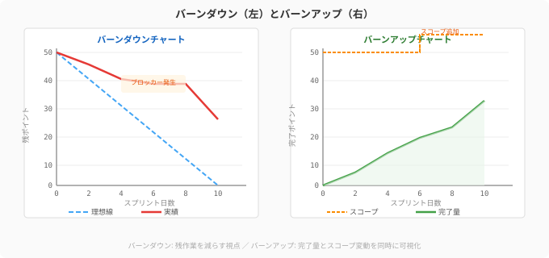

地図のない冒険は、勇気あふれる蛮行です。どれほど優れた剣士も、目的地と現在地を把握してこそ、真の実力を発揮できます。
チーム開発も同じです。「いつまでに、何を、どのくらいの規模で届けるか」を見通す力——これがプロジェクト管理の本質です。スクラムのリズム（7.1節）はチームの日々の心拍を刻みます。この節では、より大きな視野でプロジェクト全体の「旅路を設計する技術」を学びます。
ソフトウェアエンジニアリングにおいて、見積もりは伝統的に最も難しいスキルの一つです。「このAPIを実装するのに何日かかる？」——この問いに正確に答えられる人はほとんどいません。複雑さは実装してみて初めて明らかになるものです。
だからこそ、アジャイルは「時間」ではなく「複雑さの相対的な大きさ」で見積もる方法を生み出しました。
だからこそ、アジャイルはある巧みなアプローチを生み出しました。ストーリーポイント（Story Points）は、タスクの複雑さ・労力・不確実性を抽象的な数値で表す単位です。重要なのは「この作業は3日かかる」ではなく「この作業はあの作業の2倍複雑だ」という相対比較です。
QuestForgeで例えると：
| ユーザーストーリー | ポイント | 理由 |
|---|---|---|
| 勇者の名前を表示する | 1 | シンプルなデータ表示 |
| クエスト一覧を検索する | 3 | フィルタリングロジックが必要 |
| 経験値をリアルタイム更新する | 8 | WebSocket、整合性、エラー処理が絡む |
| 課金システムと連携する | 13 | 外部APIの複雑な統合、セキュリティ要件 |
フィボナッチ数列（1, 2, 3, 5, 8, 13, 21...）が好まれるのは、大きな数ほど見積もりの「精度の限界」を自然に表現できるからです。100ポイントと101ポイントの差を区別できる人はいません——であれば100と120くらいの粒度で考えるのが誠実です。
ストーリーポイントという「ものさし」が決まったら、次はそれをチームでどう合意するかが鍵になります。見積もりを民主的に行う手法がプランニングポーカーです。
「同時に出す」のがミソです。最初に誰かが高い数字を出すと、他のメンバーはその数字に引きずられてしまいます（アンカリング効果）。ポーカーは全員の独立した見解を引き出します。QuestForgeチームが週次のスプリントプランニングでこれを実践することで、シニアエンジニアが気づかなかった「フロントエンドの複雑さ」をジュニアエンジニアが指摘するといった発見が生まれます。
スプリントが始まったら、「残り作業はどれくらいか」を毎日可視化します。
次の図は、バーンダウンチャートとバーンアップチャートの形状と読み方を示しています。

バーンダウンチャートは横軸に時間、縦軸に残ストーリーポイントを取り、理想線（直線）と実績線を重ねた図です。
QuestForgeで、スプリント中盤に実績線が急に平坦になったとします。スクラムマスターがデイリースクラムで確認すると、「外部決済APIの仕様が変わって待ち状態になっている」が発覚します。バーンダウンチャートは問題を可視化し、早期の対処を促します。
残り作業を見える化するバーンダウンに対して、もう一つの視点から旅の進捗を捉える方法もあります。バーンダウンとは逆に、「完了した作業量」を積み上げていく図です。バーンアップの特徴は、スコープの変化も一緒に見せられること。途中で「ギルド機能を追加してほしい」という要求が入ると、合計線が上がります。これにより「スコープが変わったから遅れたのか」「実装が遅いから遅れたのか」が一目で区別できます。
ベロシティ（Velocity）とは、一つのスプリントで完了したストーリーポイントの合計です。
スプリント1: 32ポイント完了
スプリント2: 28ポイント完了
スプリント3: 35ポイント完了
→ 平均ベロシティ = 31.7 ≈ 32ポイント/スプリントベロシティが分かると、「プロダクトバックログに残り160ポイントあるなら、あと5スプリント（約10週間）で完了する」という予測が立てられます。
重要な視点: ベロシティは「速さ競争」の指標ではありません。「チームの持続可能なペース」を把握するための羅針盤です。スプリントごとに急激に変動する場合は、見積もりの精度か、チームの状態に課題があるサインかもしれません。
ベロシティは強力な羅針盤ですが、実際の計画にはもう一つの視点が欠かせません。スプリントプランニングでは、ベロシティだけでなくキャパシティ（実際に使える人日）も考慮します。
チーム: エンジニア4名 × スプリント10日 = 40人日
ただし:
- ミーティング・セレモニー: 4名 × 2日分
- 有給・病欠バッファ: 4日分
→ 実質キャパシティ: 40 - 8 - 4 = 28人日相当QuestForgeでは、祝日やカンファレンス参加の週はスプリントゴールを意図的に小さく設定します。無理のない計画が、チームの持続的な健康を守ります。
リスクとは「起きるかもしれないこと」です。見て見ぬふりをするより、可視化して対処策を準備しておく方が、遥かに賢明です。
リスクマトリクスでは、リスクを「発生確率」と「影響度」の2軸で評価します。
| リスク | 確率 | 影響 | 優先度 | 対策 |
|---|---|---|---|---|
| 決済APIの仕様変更 | 中 | 高 | 🔴 高 | API変更通知を購読、アダプター層で隔離 |
| DBマイグレーションの失敗 | 低 | 高 | 🟡 中 | ステージング環境での事前検証、ロールバック手順の整備 |
| チームメンバーの離脱 | 低 | 中 | 🟡 中 | ドキュメント整備、ペアプロで知識共有 |
| 新機能の仕様不明確 | 高 | 中 | 🟡 中 | スプリント0で先行スパイク調査 |
| 開発環境のセットアップ問題 | 中 | 低 | 🟢 低 | DevContainer・onboardingドキュメント整備 |
リスクを可視化できたら、今度はその「分からない」を「分かる」に変えるアクションが必要です。特定のリスクが高い技術的課題には、スパイク（Spike）を活用します。スパイクとは「調査・実験専用の時間ボックス」で、通常1〜3日程度です。
「WebSocketでリアルタイム通知を実装できるか？」——この問いに自信を持てないまま8ポイントとして計画するよりも、「まず2日間でPoCを作る」スパイクを組み込む方が、その後の見積もりの精度を劇的に上げます。
AIはプロジェクト管理のパートナーとして新しい可能性を開いています。
見積もりの補助: 「このユーザーストーリーを実装する際の技術的な複雑さ、想定されるリスク、考慮すべきエッジケースを整理して」とAIに問えば、見落としがちな観点を補完してくれます。
バックログの整理: 「この要件を、それぞれ独立してリリース可能なユーザーストーリーに分割して」という依頼は、AIが得意とする構造化作業です。
リスク分析: 「このアーキテクチャ変更のリスクを、発生確率と影響度の観点でリストアップして」と依頼すれば、考慮漏れを発見できます。
ただし、AIの見積もりはあくまで参考値です。チームの文脈、コードベースの状態、メンバーのスキルセットを理解した上で、最終判断はチームが下します。
「時間」ではなく「複雑さの相対値」で見積もるストーリーポイントは、ソフトウェア開発における見積もりの本質的な奥深さに向き合う知恵です。フィボナッチ数列の採用は曖昧さを正直に表現し、プランニングポーカーの「同時に出す」ルールはアンカリング効果を排除してチームの多様な視点を引き出します。一人のシニアエンジニアが気づかなかった「フロントエンドの複雑さ」をジュニアエンジニアが指摘する瞬間——これがプランニングポーカーが生む最も価値ある贈り物です。
バーンダウン・バーンアップチャートは残作業と完了作業を毎日可視化し、ブロッカーの早期発見を可能にします。ベロシティは「速さ競争」の指標ではなくチームの持続可能なペースを知る羅針盤であり、リスクマトリクスは不確実性を可視化してスパイクで「分からない」を「分かる」に変えます。AIはこれらすべての局面でパートナーとして機能しますが、チームの文脈を知った上での最終判断は、常に人間であるチームが下します。
7.6節では、このような技術力とプロセス力を持つチームが向き合う「ドキュメントと知識管理」の技法へと進みます。未来の自分やチームメンバーへの最高の贈り物を作りましょう。